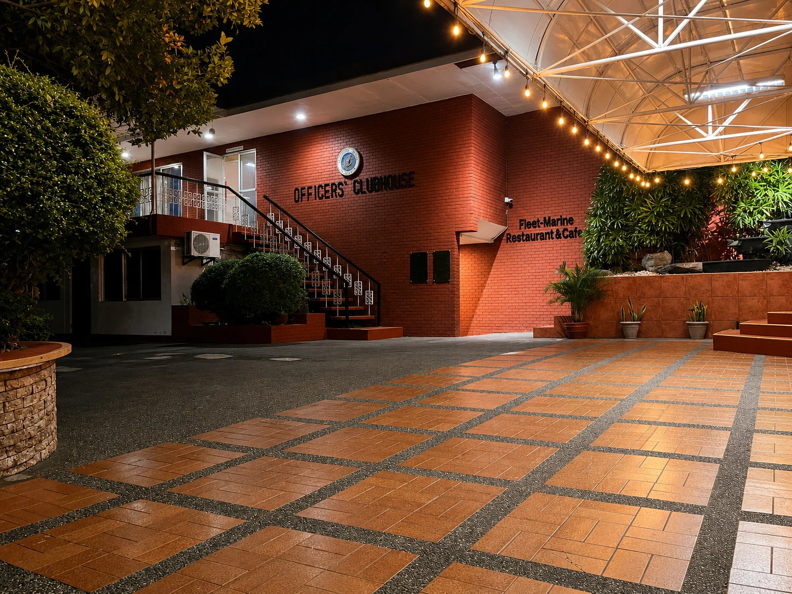
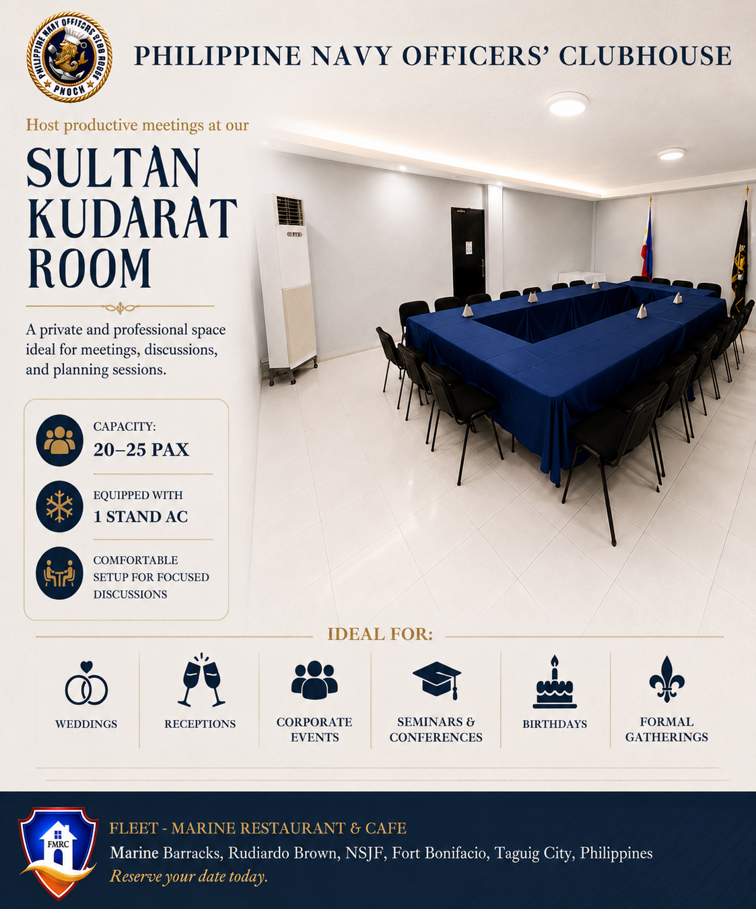
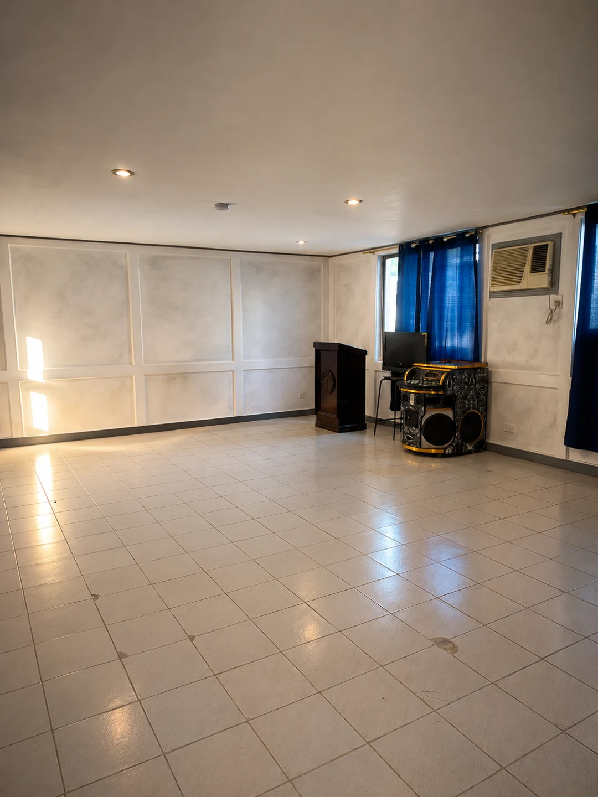
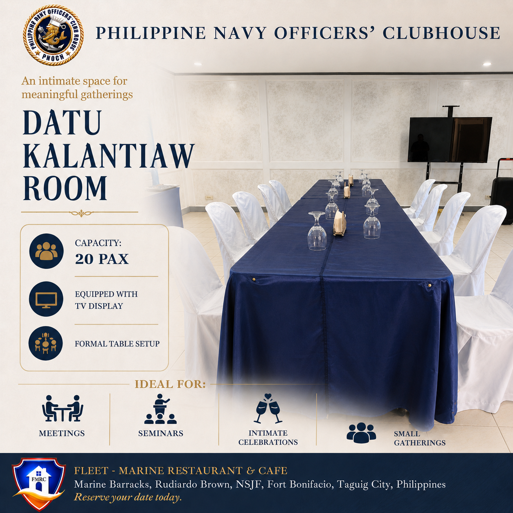
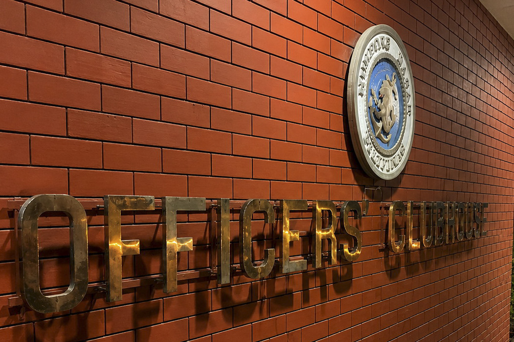

Fleet–Marine Restaurant & Café
01Enjoy Filipino flavors and warm hospitality in the clubhouse restaurant.
DiningFilipino cuisine

FORT BONIFACIO · TAGUIG CITY
PNOCI mission is to provide a venue for the morale and welfare activities of Officers and dependents and for the Command activities.
WELCOME TO PNOCH
The clubhouse with the invaluable services provided by its Management, continues to grow over the years. It still caters to military personnel and their dependents. It is also recognized by civilians and private companies, who increasingly choose its services over other facilities. This has enable the clubhouse to renovate and enhance its facilities for the satisfaction of its customers.
The Philippine Navy Officers’ Clubhouse provides a setting for fellowship, dining, and meaningful gatherings. Its halls, meeting rooms, and restaurant reflect a tradition of camaraderie and hospitality.
From a shared meal to a conversation among friends, the clubhouse is a place to strengthen the bonds that make a community.
Experience Fleet–Marine diningVENUES
Explore the Social Hall and Main Dining Hall, each with its own character and generous open space.
Enjoy Filipino flavors and warm hospitality in the clubhouse restaurant.
An open, versatile hall with a raised stage and room for different seating arrangements.
A spacious hall with polished wooden floors, a stage, and access to a balcony.
OUR VENUES · MEETING ROOMS
Three distinct rooms for focused discussions and smaller gatherings.

A private, professional room with a table arrangement for discussions and planning.

A bright room with a flexible open layout for smaller gatherings and meetings.

An intimate room with a formal table setup and a TV display.
OUR HERITAGE
For generations, the clubhouse has provided a place for camaraderie and connection within the Philippine Navy community.

1 JANUARY
Constructed during the incumbency of RADM Ernesto Ogbinar AFP as Flag Officer in Command, the Philippine Navy Officers’ Clubhouse was inaugurated on 1 January 1979.
21 MAY
The Philippine Navy Officers’ Club Incorporated was registered with the Securities and Exchange Commission to strengthen camaraderie and fellowship.
14 MARCH
The facility’s designation returned to Philippine Navy Officers’ Clubhouse following approved changes to its management structure.
1 JULY
Fleet–Marine Restaurant and Café was established under the management of the Philippine Navy Officers’ Club Incorporated.
THE COMPLETE ACCOUNT
Original wording from the clubhouse history reference. “Presently” refers to the time that document was written.
Philippine Navy Officers’ Clubhouse was constructed during the incumbency of RADM ERNESTO OGBINAR AFP as Flag Officer in Command and was inaugurated on 01 January 1979.
Initially managed by NISF, it later came under the Commander Bonifacio Naval Station, becoming the Bonifacio Naval Station Officer’s Clubhouse. Subsequently, it was transferred to Headquarters Philippine Navy, under the Chief of Naval Staff, and its name reverted to the Philippine Navy Officer’s Clubhouse.
On 21 May 2003, the Philippine Navy Officers’ Club Incorporated was registered with the Securities and Exchange Commission. It was created to foster camaraderie, strengthen interpersonal ties, and promote fellowship among members, consistent with PNOC’s nature as a social organization.
In 2003, PNOC was registered with Securities and Exchange Commission;
BOD - 2 representatives from each rank Category (O1-O3, O4-O5, and O6) with 2-year terms. CNS Chairs the PNOCI Board of Directors.
On 14 March 2005, the FOIC, PN (VADM ERNESTO H DE LEON AFP) approved the ff:
Termination of designation of BNSOC BOD;
Revision of O/CNS Office Circular to include the Manager, BNSOC as a Special Staff under the CNS.
PNOC Board of Directors to exercise management control over BNSOC;
Renaming BNSOC facility back to its original designation and renamed as Philippine Navy Officers Clubhouse (PNOCH).
Though the PNOCH and PNOCI merged and under the same Management, the clubhouse (PNOCH) operates on its own income and not receiving any financial assistance from the PNOCI. It has separate bank accounts and recordings in terms of financial records.
On 30 June 2014, the PNOCH Restaurant terminated its operation and subsequently granted the separation pay of all employees.
On 01 July 2014, The Fleet-Marine Restaurant and Cafe (FMRC) were established and start to operate as a private entity under the management of PNOCI.
On 15 July 2014, the Clubhouse started paying its employees with minimum wage.
On 27 December 2014, Management of FMRC employees was transferred to a manning agency.
Presently, Fleet-Marine Restaurant and Cafe (FMRC) is still under the Management of PNOCI with Chief of Naval Staff as Chairperson. It has two (2) outlets: HPN and BNS (Main).
GALLERY
Click any photograph to view it larger.
GET IN TOUCH